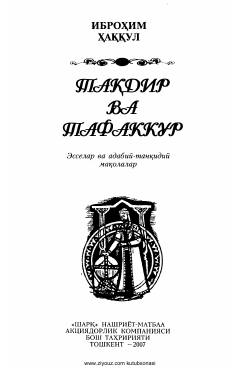

TVSharq tasavvufi va buyuk mutafakkirlar ijodiga bag'ishlangan adabiy-tanqidiy maqolalar to'plami.
Ushbu kitob sharq tasavvufi, irfoniy she'riyat va buyuk mutafakkirlar ijodiga bag'ishlangan esselar hamda adabiy-tanqidiy maqolalardan iborat. Muallif Rumiy, Yassaviy va Navoiy kabi siymolar ijodidagi ishq, ma'rifat va haqiqat g'oyalarini tahlil qilib, ularning bugungi kun uchun ahamiyatini ochib beradi.